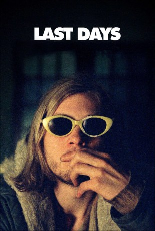

#11737 Last Days
 
 IMDB-Wertung: 5.8 / 10
IMDB-Wertung: 5.8 / 10  Tomatometer: 57
Tomatometer: 57  Metascore: 67
Metascore: 67 
Last Days ist ein US-amerikanisches Filmdrama aus dem Jahr 2005, dessen fiktive Geschichte durch die letzten Tage von Kurt Cobain inspiriert ist. Regie führte Gus Van Sant, der auch das Drehbuch schrieb und als Cutter tätig war.
Jahr: 2005
Dauer: 92 Minuten
FSK: 12
Land: USA Studio: Fine Line FeaturesTonspuren:
Untertitel:
Auflösung: SD (608x448) Größe: 700 MB
Genre: Drama, Musik
Regisseur:  Gus Van Sant
Gus Van Sant
Drehbuch: Gus Van Sant
Soundtrack: Rodrigo Lopresti
Darsteller:
- Michael Pitt als Blake
 Lukas Haas als Luke
Lukas Haas als Luke- Asia Argento als Asia
- Nicole Vicius als Nicole
- Ricky Jay als Detective
- Harmony Korine als Guy in Club
- Rodrigo Lopresti als Band in Club
- Kim Gordon als Record Executive
- Thadeus A. Thomas als Yellow Book Salesman
- Kurt Loder als TV Voiceover
- Gus Van Sant als Phone Voice
 Riley G. Matthews Jr. als Coroner's Attendant (uncredited)
Riley G. Matthews Jr. als Coroner's Attendant (uncredited)- Giovanni Morassutti als Band Fun (uncredited)
- Ari Tomais als Detective (uncredited)
- Scott Patrick Green als Scott
- Ryan Orion als Donovan
- Adam Friberg als Elder Friberg #1
- Andy Friberg als Elder Friberg #2
- Chip Marks als Tree Trimmer
- Michael Azerrad als TV Voiceover
- Chris Monlux als Phone Voice
- Jack Gibson als Phone Voice
- Dawnn Pavlonnis als Phone Voice
- Tyler Fenio als Himself (uncredited)
Datei: X:\NEU\Last Days (2005, FSK12, 608x448).avi seit 14.09.2019
 Es gibt insgesamt 187 Filme in der Gruppe 'NEU'
Es gibt insgesamt 187 Filme in der Gruppe 'NEU'